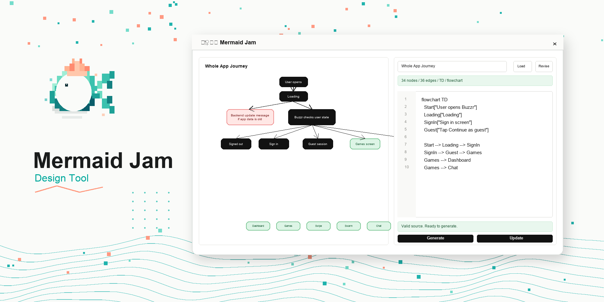

🧜♀️🍓 Mermaid Jam
Mermaid to editable FigJam.
Paste Mermaid or markdown and generate native FigJam userflows, journey maps, sequence diagrams, state flows, mindmaps, and timelines.
Local-only. No accounts. No analytics. Dynamic connectors stay attached when cards move.
Open app
Sign in screen
Guest flow ready
Blocked action
Product preview

Built for product and design workflows
Editable outputUses native FigJam sections, shape cards, and connector nodes instead of static images.
Safe updatesPreserves manually moved cards when source node IDs still match.
Local validationLine-level diagnostics catch malformed source before generation.
Layout controlsCompact, Readable, Presentation, Print, Wide Map, and Deep Tree presets.
Journey viewsClean timelines, score views, bottleneck callouts, and insight summaries.
Private by defaultNo network access, no backend, no analytics, no account system.
Copy-paste example
flowchart TD Start["Open app"] Loading["Loading"] SignIn["Sign in screen"] Guest["Tap Continue as guest"] Start --> Loading --> SignIn --> Guest